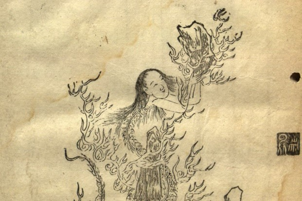

Nu Gua
Nu Gua is the creator of mankind, sex, and marriage. She is depicted as a woman with a serpent lower half. She found herself on Earth, a seemingly endless mass of mud, and decided to use that mud to make company. She found that the serpent part of her did not look right, so gave her sculptures legs, thus creating the first humans. She also made a mix of men and women. With the addition of rituals like marriage, she made it so her creations reproduce on their own so she wouldn’t have to make them all.